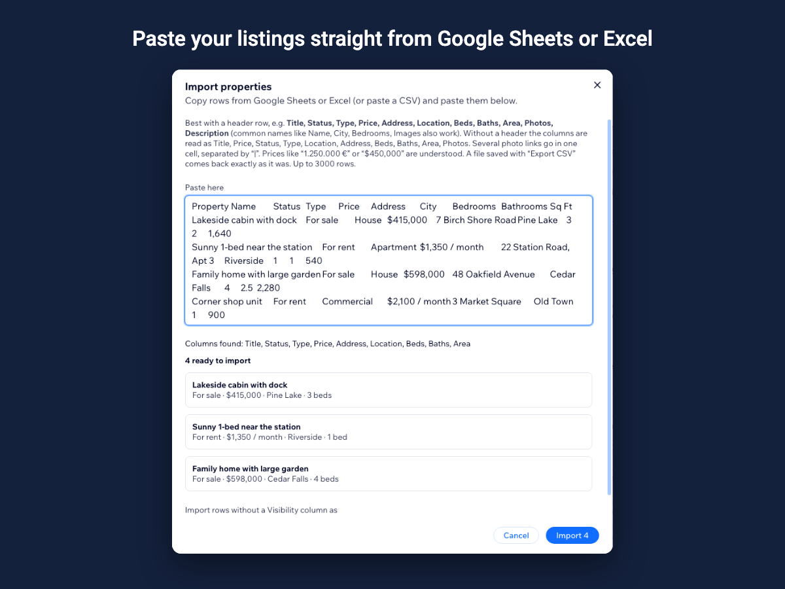

How to add property listings to a Wix site
A real-estate site needs more than a gallery: visitors expect to filter by sale or rent, price and bedrooms, open a property for its photos and details, and ask about it. This guide shows how to set that up with the Property Listings app.
1. Install the app and open its dashboard
Install Property Listings from the Wix App Market. The first time you open its dashboard you see a few sample properties so you can try every feature; they are never shown on your published site.
2. Add your properties
Add a property with its title, status (for sale, for rent, under offer, sold or rented), type, price, address, rooms, areas, features and photos from Wix Media. If your listings are already in a spreadsheet, copy the rows from Google Sheets or Excel and paste them into the import window: columns such as Price, Bedrooms or Address are recognised by their names, and the preview shows every row before anything is saved.

3. Choose what the board shows
A board is one widget on a page. It can show every published property, or only rentals, one area, one property type or one tag — for example a "Rentals" page and a "Homes for sale" page from the same library. Pick the layout, theme, accent color, currency and which search controls visitors get.
4. Add the widget to a page and publish
In the Wix Editor, add the Property Listings widget to a page and choose the board in its settings. After you publish, visitors can search, open properties and send enquiries. Mark a property sold or rented when the deal is done, or move it back to draft.
Questions
Can I show rentals and sales on different pages?
Yes. Each board has its own preset filter by status, type, location or tag, and every board reads the same property library.
Can I import properties from a spreadsheet?
Yes. Copy the rows from Google Sheets or Excel and paste them; the preview shows what will be imported and warns about anything it could not read.
See it in the Wix App Market